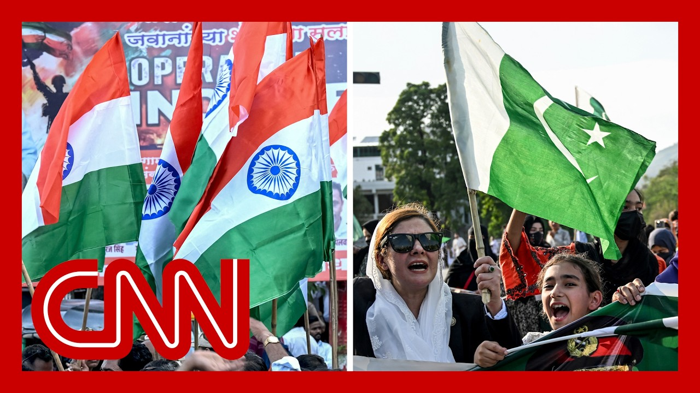

【印度和巴基斯坦达成紧张的停火协议】
Summary: The ceasefire between India and Pakistan is holding, with celebrations in Pakistan and conflicting claims about U.S. involvement, while both countries acknowledge ongoing challenges, particularly over Kashmir.
摘要： 印度和巴基斯坦之间的停火协议得以维持，巴基斯坦街头出现庆祝活动，但对美国参与程度存在争议，两国均承认在克什米尔等问题上仍面临挑战。

⏱️ Estimated Reading Time: 15 min
New this morning, the cease fire between India and Pakistan is holding.
今早最新消息，印度和巴基斯坦之间的停火协议仍在持续。
There were celebrations in the streets of Pakistan once the cease fire was announced.
停火协议宣布后，巴基斯坦街头出现了庆祝活动。
It's around 5 p.m. in India and Pakistan.
印度和巴基斯坦时间约为下午5点。
The cease fire ended their four days of direct military strikes.
此次停火结束了双方为期四天的直接军事打击。
President Trump announced the truce and took credit for it.
特朗普总统宣布了停火并归功于自己。
But there had been conflicting claims about the degree to which the U.S. was involved.
但对于美国的参与程度存在相互矛盾的说法。
We are covering this from all angles for you.
我们将从各个角度为您报道此事。
We have CNN's Nic Robertson in Islamabad, Pakistan, and we have Matthew Chance in New Delhi.
CNN的尼克·罗伯逊在巴基斯坦伊斯兰堡，马修·钱斯在新德里为您报道。
Nic, we're starting with you.
尼克，我们从你开始。
And today, a day of celebration there.
今天是当地的庆祝日。
Yeah. A Day of Thanksgiving.
是的，一个感恩的日子。
That's what the country is calling it.
这是该国对此的称呼。
you know, to give gratitude to Allah, to thank the troops, to get that sense of national unity.
你知道，感谢真主，感谢军队，感受民族团结。
And I think it is fair to say that Pakistan, Pakistanis feel not only relieved because let's not forget here, this was a very intense war at certain moments, India striking deeper and more extensively, extensively into Pakistan than they have done in 50 years.
我认为可以说巴基斯坦人不仅感到宽慰，因为别忘了，这是一场非常激烈的战争，印度在某些时刻对巴基斯坦的打击比过去50年更深、更广泛。
The countries have fought several wars previously over issues in Kashmir.
两国此前曾因克什米尔问题多次交战。
Every time Pakistan loses and recently it had really felt isolated from the international community that India was sort of looming over them.
每次巴基斯坦都失利，最近它确实感到被国际社会孤立，印度似乎对其构成威胁。
And you get a sense of this now from what we're hearing from politicians.
从政界人士的言论中可以看出这一点。
and the thanks that they're giving to President Trump, President Trump in his post today said that he will help Pakistan and India to deal with their issues over Kashmir.
他们对特朗普总统表示感谢，特朗普今天在帖子中表示将帮助巴基斯坦和印度解决克什米尔问题。
The Ministry of Foreign Affairs today released a statement saying that they were grateful for President Trump and his team's involvement in the negotiations, that they looked forward to being able to, you know, find that support going forward.
外交部今天发表声明，对特朗普总统及其团队参与谈判表示感谢，并期待未来继续获得支持。
And I think it's also worth noting here that it's not just the United States that, the officials here have been thanking.
值得注意的是，巴基斯坦官员感谢的不仅是美国。
It has been Turkey.
还有土耳其。
It has been the UAE.
阿联酋。
It's been Saudi Arabia.
沙特阿拉伯。
The Greeks called up the other day, China, a massive and stalwart ally whose military made a huge difference in the aerial dogfight.
希腊前几天也来电，中国作为一个强大而坚定的盟友，其军事力量在空战中发挥了巨大作用。
So the fighter jets and the missiles supplied to Pakistan, lessons, military lessons learned by both sides in this four day conflict.
因此，提供给巴基斯坦的战斗机和导弹，以及双方在这四天冲突中吸取的军事教训。
But I think where Pakistan emerges today recognizes that it has huge challenges still in dealing with India going forward, particularly on the issue of Kashmir, particularly on the issue of the water that the the treaty that India says it's going to continue to abrogate and not supply vital water, to Pakistan.
但我认为巴基斯坦现在认识到，未来在处理与印度的关系上仍面临巨大挑战，尤其是在克什米尔问题和印度声称将继续废除条约、不向巴基斯坦供应重要水资源的问题上。
And I think on that very intriguing and interesting question of the role that the United States played.
关于美国所扮演的角色，这是一个非常有趣的问题。
And they saw something troubling.
他们看到了令人不安的情况。
They piled in the diplomatic effort, both with India and Pakistan working with both countries.
他们加大了外交努力，与印度和巴基斯坦两国合作。
to to resolve this and bring a ceasefire that teetered even to the last minute.
以解决这一问题并达成停火，这一停火协议直到最后一刻才勉强达成。
Pakistan thanks the United States for their engagement.
巴基斯坦感谢美国的参与。
India says no.
印度则否认。
This was all done unilaterally between India and Pakistan.
这是印度和巴基斯坦单方面达成的。
Historically, India does not want to internationalize the issue of Kashmir and other issues as well between the two countries.
历史上，印度不希望将克什米尔问题和其他问题国际化。
Not clear why, but the quick analysis might be that India fears having other international players involved.
原因尚不清楚，但快速分析可能是印度担心其他国际参与者的介入。
perhaps tipped the balance against them, but certainly Pakistan feels that the balance has tipped towards them in terms of international support.
可能会打破对其不利的平衡，但巴基斯坦确实认为国际支持的天平已向其倾斜。
After what's happened over the past four days.
在过去四天的事件之后。
All right.
好的。
Nic Robertson, for us there in Islamabad, that takes us right now to Matthew Chance, CNN's chief global affairs correspondent.
尼克·罗伯逊在伊斯兰堡为我们报道，现在我们将连线CNN首席全球事务记者马修·钱斯。
Matthew, and this is the right segue into you, because there was so much gratitude from the Pakistani prime minister to the the president, the US administration.
马修，这是一个很好的过渡，因为巴基斯坦总理对美国政府和总统表达了大量感谢。
India says not only did the U.S. not play a major role here.
印度表示，美国不仅没有发挥重要作用。
No one will come in from outside of these two countries to to negotiate Kashmir.
不会有来自两国以外的国家来谈判克什米尔问题。
Well, that's right.
确实如此。
There's definitely been, a distinct, you know, different emphasis here in India in terms of the role the United States played.
在印度，对美国所扮演的角色确实有不同的强调。
and there were a couple of reasons for that.
这有几个原因。
One of them, as Nick was just saying, is that here in India, there's a long standing refusal to participate in sort of or allow international mediation when it comes to the the, the dispute over Kashmir.
其中之一，正如尼克所说，印度长期以来拒绝参与或允许国际调解克什米尔争端。
It's been a long running dispute.
这是一个长期存在的争端。
It's been going on for for many decades, really for nearly 78 years, in fact, since the, the early days of, of the, of the foundation of the state of India.
事实上，这一争端已持续数十年，近78年，自印度建国初期以来。
and from the outset, India has categorically refused, or at least in recent years, to engage in negotiations.
从一开始，印度就断然拒绝，至少近年来拒绝参与谈判。
That's one of the reasons why, it's been so reluctant to acknowledge there was a US broker brokering aspect of this, of this, of this latest, ceasefire.
这就是为什么印度不愿承认美国在这次最新停火中发挥了斡旋作用。
There's also, nationalistic reasons as well.
此外还有民族主义原因。
You know, India has, you know, a very strong, nationalist sort of, you know, body of support and, you know, it it didn't want to reject the idea.
印度有非常强烈的民族主义支持，不希望拒绝这一想法。
I don't think that this peace was in some way imposed upon it from an outside power.
我不认为这种和平是以某种方式由外部强加给印度的。
The message, the narrative that the Indian government very much wants to put across to its own people is that this was something that was its initiative, something that it agreed to do on its own terms.
印度政府非常希望向本国人民传达的信息是，这是其主动采取的行动，是其根据自己的条件同意做的事情。
And I think that's why there's there's a real difference in the narratives coming out of India and Pakistan right now on, you know, why this cease fire and how this cease fire took shape?
我认为这就是为什么印度和巴基斯坦目前在停火原因和停火如何达成的问题上存在真正的叙述差异。
Matthew Chance for us there in New Delhi.
马修·钱斯在新德里为我们报道。
Matthew.
马修。
Thank you.
谢谢。
Let's dig deeper now into the India-Pakistan ceasefire.
现在让我们更深入地探讨印巴停火问题。
Also, the efforts to get to a 30 day ceasefire between Russia and Ukraine with Bobby Ghosh.
此外，还有鲍比·高希关于俄罗斯和乌克兰达成30天停火协议的努力。
He's the former editor of the Hindustan Times and a geopolitics analyst.
他是《印度斯坦时报》前编辑和地缘政治分析师。
Bobby, good morning to you.
鲍比，早上好。
Morning, Victor.
早上好，维克多。
So let's start here, with India and Pakistan.
让我们从印度和巴基斯坦开始。
this ceasefire is holding, for the first few hours, there were accusations from each that the other had violated.
停火协议得以维持，最初几小时双方互相指责对方违反协议。
But, you know, we're several hours into it now.
但现在已过去几个小时。
But you call this a new, more dangerous era.
但你称这是一个新的、更危险的时代。
Why?
为什么？
Well, if you look at how these spasms of violence between these two countries have gone in the past.
如果你看看两国过去暴力冲突的模式。
Victor, there's a terrorist attack on India.
维克多，印度发生恐怖袭击。
India responds by striking terrorist targets in, Pakistan.
印度通过打击巴基斯坦境内的恐怖目标作出回应。
Pakistan then does some sort of a symbolic, attack on India, and then the two sides call it quits, and each side then claims that it has achieved its results.
巴基斯坦随后对印度进行某种象征性攻击，然后双方停战，各自声称取得了成果。
What's different this time is that the the the conflict has gone on for several days, and the kinds of targets that each side has picked up have now the bar has been raised.
这次不同的是，冲突持续了数天，双方选择的目标门槛提高了。
India has now struck Pakistani military targets, not just terrorist targets.
印度现在打击的是巴基斯坦军事目标，而不仅仅是恐怖目标。
And sometimes quite deep into Pakistani territory, into important places, Pakistani military bases, in and around the cities of Lahore, Rawalpindi.
有时深入巴基斯坦领土的重要地点，如拉合尔和拉瓦尔品第市及其周边的巴基斯坦军事基地。
quite close, we are told to the the headquarters of Pakistan's nuclear command.
据称非常接近巴基斯坦核指挥总部。
Pakistan likewise was also struck at Indian military targets brought down.
巴基斯坦同样打击了印度军事目标并击落了一些印度军机。
some Indian military jets.
一些印度军机。
The exact numbers have not yet been confirmed, but clearly the bar on both sides have been raised and the messaging from the governments on each side towards their own people.
确切数字尚未确认，但显然双方的门槛都提高了，两国政府向本国人民传达的信息也是如此。
There's also the bar that has been raised that if the enemy attacks us, this is how far we're willing to go.
门槛的提高还体现在如果敌人攻击我们，我们愿意走多远。
So the problem with any long running conflict, like the Indian Pakistani conflict, is that every time there's a spasm of violence and the bar is raised, it means that the the next time there is this, this sort of provocation and, sort of tugging and throwing of, of attacks, you have to go up to the last bar and then go a step forward.
因此，像印巴冲突这样的长期冲突的问题是，每次暴力冲突爆发且门槛提高，意味着下次遇到这种挑衅和攻击时，你必须达到上次的门槛并再进一步。
That's the political reality of it, that that's what comes off this kind of messaging.
这是政治现实，也是这种信息传递的结果。
The expectations that have been set with the population on both sides have been raised, and that's the real danger.
两国人民对彼此的期望提高了，这才是真正的危险。
And as long as the underlying conflict is not addressed, there's always a risk that we will come back to this place again.
只要根本冲突未解决，我们就有可能再次回到这种局面。
And so you say this a more dangerous era, and that's for every subsequent intersection.
因此你说这是一个更危险的时代，对未来的每一次冲突都是如此。
But at this intersection, do you believe that they have retreated from the type of escalation that that moved Vice President Vance from saying this is fundamentally not our business to attempting to get involved and mediate some some pause?
但在这次冲突中，你认为他们是否已从副总统万斯所说的“这根本与我们无关”转向试图介入并调解某种暂停的升级中退却？
Well, they certainly have pulled back.
他们确实已经退却。
And it was expected that they would.
这是预料之中的。
There was expectations that once each side had that if you were paying close attention to the propaganda messaging in both countries, there was always already this language that we have taught them a lesson that that that is that those are trigger words.
如果你密切关注两国的宣传信息，就会发现双方早已有“我们已经教训了他们”这样的措辞，这些是触发词。
When one side says that, it means that we've done enough for now.
当一方这样说时，意味着目前已经做得足够。
so I think that mediation or no mediation, mediation doesn't work if the two parties are not willing to get to use the off ramp that has been provided.
因此我认为，无论是否有调解，如果双方不愿意使用提供的退出途径，调解就不会奏效。
And I think both parties had already signaled that they were ready for that step.
我认为双方已经表示准备好采取这一步骤。
And then a lot of other international players got involved.
然后许多其他国际参与者介入。
And the American president is trying to claim much of the credit for himself.
美国总统试图将大部分功劳归于自己。
The Indians are saying the Americans had no role.
印度人表示美国没有发挥作用。
The Pakistanis are saying there were 36 countries, three dozen countries that were involved in the diplomatic effort.
巴基斯坦人表示有36个国家参与了外交努力。
I think for the people who are caught in the middle of this war for ordinary Kashmiris, Indians and Pakistanis, they're just relieved that the ceasefire seems to be taking hold.
我认为对于夹在这场战争中的普通克什米尔人、印度人和巴基斯坦人来说，他们只是对停火似乎得以维持感到宽慰。
They don't really care what the, mediation process was like, as long as the guns go silent.
只要枪声停止，他们并不真正关心调解过程如何。